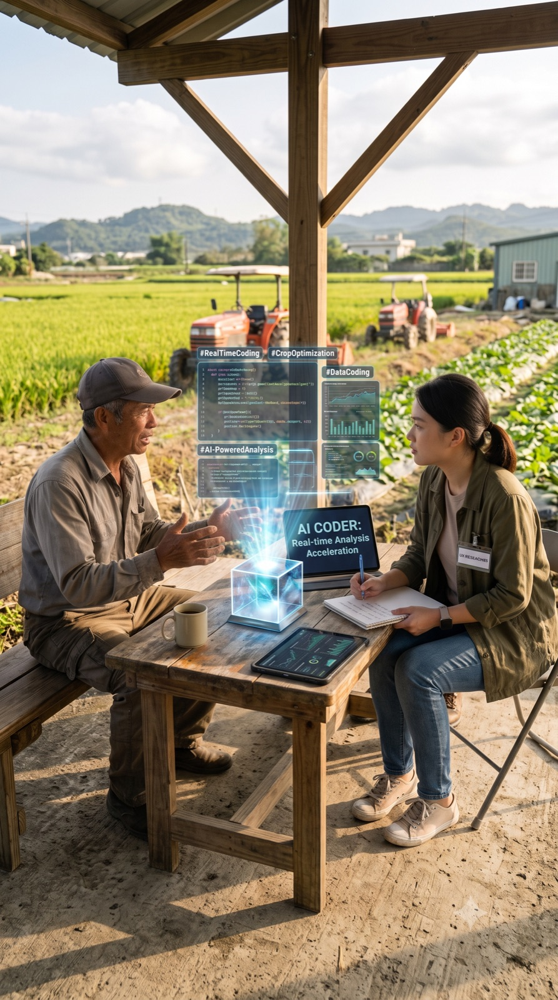

數據可以精準抓出跳過率升高或使用時間下滑
但我們要怎麼確認用戶在螢幕另一端一邊操作一邊皺眉碎碎念的真實心情呢？
用戶 4rHZAMHpZrA3iH5z... 播放 Justin Timberlake《Mirrors》的三筆紀錄：
Spotify streaming_history_log · 同一用戶、同一首歌、三種截然不同的播放軌跡
清空黃金通道，砍掉 15% 核心商品品項。
同店業績連跌 5 季，重創 18.5 億美元（$1.85B）營收。
解雇執行副總裁，被迫將特價品全數擺回通道。
工程師「修正」Bug，確保 100% 都是陌生冷門歌。
用戶聽一兩首就退出，指標直接崩盤。
把 Bug 改回功能，上線一年 50 億次串流。
回答 99% 的 What（發生什麼事）
但對 1% 的 Why 束手無策
回答最深刻的 Why（用戶心智）
但老闆問：「代表多少人？」
問卷說「還不錯」，行為卻是「秒切／秒退」
態度與行為落差最大的地方，就是該探索的地方。
追蹤 行為型指標
（Telemetry／Funnel）
進行 脈絡訪查
與 可用性測試
「如果我們未來推出『AI 自動排程』功能，你會想用嗎？」
人類極度不擅長預測自己的未來。這種問法只會誘發「討好型回應」，你拿到的是零成本的善意，而不是真實的付費意願。
「回想一下你這週最後一次手動調整行事曆是什麼時候？那時候你碰到了什麼狀況？當時你怎麼解決的？」
過去發生的「摩擦力」才是真正的痛點。用具體行為還原脈絡，才能挖出 Data Team 在後台能追蹤的 Ground Truth。
Data 要的是量化證據，UX 缺的是真實脈絡。
Data 起手式 ➔ 拋出「量化斷崖點」（如 Spotify 1 秒秒切率異常）
UX 交叉詰問 ➔ 追問「時空物理脈絡」——什麼裝置？什麼時段？藍牙連動狀態？
Data 負責畫出問題的邊界，UX 負責還原現場的物理維度。
| 特性 | Spotify（體驗驅動／訂閱制） | 電商（交易驅動／零售型） |
|---|---|---|
| 使用者旅程 | 非線性、循環式（打開→聽歌→探索→續聽） | 線性漏斗（進站→搜尋→購物車→付款） |
| 核心 UX 難題 | 「選擇過載」——3 秒內決定聽什麼 | 「信任與摩擦」——放心交出信用卡 |
| 關鍵商業北極星 | LTV 與留存率（Retention） | GMV 與轉換率（CR） |
| 最痛的量化指標 | Skip Rate（體驗不合心意） | Cart Abandonment Rate（臨門放棄） |
商業本質不同，北極星就不同——體驗設計必須跟著變現模式走，沒有一招打天下的公式。
Microsoft 等業界團隊——用同一張卡把「相信什麼」跟「怎麼衡量」綁在一起，打破各自為政。
用戶對「App 開啟無縫接續播放」給了
態度：喜歡無縫感
每天早上 8 點，高達
在 App 啟動後秒切
行為：ms_played < 2000ms
因為我們有 Feature Flag，這個實驗只對 5% 的用戶開放。
一旦護欄警報響起，直接 Rollback 關掉。
上一頁的假說卡，攤開就是團隊的共用工作桌——Need 承接異常，Test 定義成功，Learnings 記錄結果。
ms_played < 2000ms（秒切）在 appload 場景高頻發生。
早上連上車用藍牙的瞬間，被昨晚的音樂自動播放「突襲」。
取消藍牙連線自動播放，改為彈出「接續昨晚播放？」智慧按鈕。
消除早晨通勤的認知摩擦。把控制權還給用戶，在防止體驗帳戶透支（降低 Skip Rate）的同時，保留「無縫接續」的產品美意。
appload 觸發的秒切率
↓35%
且該功能的整體滿意度維持 4.5 星以上。
滿意度跌至 3.2 星（視覺負荷過高）。
假說推翻。取消畫面按鈕，改為純「語音提示」，徹底解放駕駛雙眼。
Canvas 格式：Hypothesis-Driven Designer Canvas · CC BY-SA 4.0
尋找數據斷點，交叉比對質化問卷，定位「態度與行為」對不上的案發現場。
用「上一次…」句型問過去發生的事，別用「你會不會…」問假設。
➔ 這張卡會直接帶進第三次社課，做成 Prototype
「我歸納出這 3 個假說。請扮演 Red Team，找出能推翻假說的反證。」
「請按【摩擦點】【期望落差】進行多維度標籤，並產出結構化矩陣。」
「你是缺耐心的 B2B 主管。我問假設題時請敷衍，有真實痛點才多說。」

把跑腿的雜事留給 AI，把靈魂與同理心留給人類。
省下 60% 以上的時間——終於從日復一日的「手刻逐字稿」與「瘋狂貼標籤」中解脫。
同理心流失是真實風險——只看 AI 給的結論，你就與真實用戶脫節。
不可取代的情緒深度——最嚴苛、最真的痛點。
快速壓力測試與排雷——便宜、秒回，但會討好你。
量化規模下，同時做 1:1 質化追問。
| 平台類別 | 代表工具 | 核心價值 |
|---|---|---|
| 真實用戶 AI 主持 | Perspective AI · Strella | 深度追問，大規模獲取真實客戶心聲 |
| 虛擬用戶模擬 | Synthetic Users | 數分鐘完成前期假設驗證，節約成本 |
| AI 輔助人工主持 | Notably · Marvin | 加速逐字稿整理、主題編碼與亮點剪輯 |
做一場 15 分鐘的基礎訪談——對象可以是朋友、同事或家人。
改問 蝦皮 / momo / Amazon 經驗：最近一次棄購、退貨、湊免運的真實過程。
改問 Spotify / YT Music / KKBOX 經驗：最近一次狂按跳過、找不到想聽的歌、想取消訂閱的時刻。
問過去不問未來；別連問三次「為什麼」；當場請他打開 App（Show, Don't Tell）。
徵得同意後錄音丟給 AI 做逐字稿與初步貼標——但哪句是真痛點，由你裁決。
3 句金句 ＋ 1 張修正後的 HDD 假說卡——直接餵進 AI Product Lab 做 Prototype。
受訪者的產品跟 dataset 不同沒關係——同一種行為、不同產品；假設能夠遷移，本身就是好發現。
會問問題的設計師，才把數據變成好決策。
現在換你了！
質化量化排序 · 協作閉環 · 訪談問法對照表 · 體驗快篩三板斧
AI 研究工具生態 · UX × 商業 2×2 矩陣與商業價值論證 · 說服老闆的三角測量
主講不涵蓋——會後自行翻閱，或 Q&A 時跳頁使用。
無法全讀 3,000 筆
AI 一秒掃完，提出最代表 + 最反常的 100 筆；Data 提供篩條件。
高亮金句發散無規則
人類定義編碼維度，AI 批量打標，人只複審模糊地帶。
表層分類太淺
看穿背後的共同心智；用 Data 驗證這心智困境佔多少流量。
「洞察」淪為自嗨廢話
強制套入 HDD 公式，讓質化終點直接變成 A/B 測試起點。
無論 AI 幫你總結得多漂亮，最終提煉出的每一個假說，都必須能 「一鍵下鑽」回最原始的那一句用戶發言。這是資深團隊的底線：維持可追溯性（Traceability）。
UX 與商業，各有一套「問為什麼」的方法。
關鍵不只是「好不好用」，是價值摩擦——使用者根本不認同這功能的核心價值嗎？
往往揭示非技術性的成交阻礙：合規風險、採購流程、內部政治。
用戶進站通常有明確目的——核心是最短路徑、最低摩擦力，說服完成結帳。
沒有真正的錢包、沒有真實摩擦力，AI 基於公開語料的「平均預測」只會製造 Sycophancy（討好病）——錯把幻覺當優化。
Data Team 與 UX 必須堅守以真實用戶行為作為基準面，用來 Calibrate（校準） AI 預測模型——否則產品優化淪入同溫層幻覺。
UI 互動檢查、文案易讀性、Design System 規範 → 代價低，批量過濾。
價值主張變更、付費意願、心智模型 → 損害營收，真金白銀驗證。
讓 AI 負責擴大規模，讓人負責定義意義。
你們手上已有行為數據——今天走中間：先量化發現異常，後質化追問為什麼。
規模化效率（Scale）× 深層同理心（Empathy）——雙向融合，輪流接棒。
分工不是搶地盤：Data 做 pattern 識別，UX 做意義賦予。AI 起草，UX 當編輯——防止它誇大痛點、混淆無關回饋。
在實務上，不論是 B2C 還是 B2B 產品，當我們屈服於 Stakeholders 的壓力而問出「假設性問題」時，往往會得到虛無的「安全感」，進而導致災難性的開發決策。
關鍵在於：用 UX 問出「過去的真實行為（Why）」，並用 Data 驗證「後台的規模化指標（What）」。
| 產品類型 | 避開這種問法（假設） | 盲信的風險 | 改問 + Data Team 驗證 |
|---|---|---|---|
| 【B2C】 記帳軟體 |
「出自動記帳功能你會用嗎？」 | 查看風險 ✕ 研發資源浪費 開發三月上線，活躍度 < 5%。真實場景中根本沒人用。 |
「上一次超支，怎麼發現的？怎麼處理的？」 超支後 3 天打開率 vs 未超支用戶。 |
| 【B2C】 訂閱服務 |
「願意花多少錢訂閱？」 | 查看風險 ✕ 付費轉換慘淡 實際掏錢比例遠低於口頭承諾。定價策略根據假設性問卷，轉換率慘不忍睹。 |
「目前訂閱哪些？上一個取消的是什麼？為什麼？」 流失模型：上次登入到取消的時間窗。 |
| 【B2B】 企業資安系統 |
「強制密碼更新 + 雙重認證，願意部署嗎？」 | 查看風險 ✕ 防線潰散 主管同意，員工直接破壞：密碼貼螢幕、用共用帳號。規定與執行天差地遠。 |
「員工違反安全規定時怎麼發現？IT 花多少時間處理？」 違規成本、合規率、時間分析。 |
| 【B2B】 協作平台 |
「加入 AI 助理自動轉表格，好用嗎？」 | 查看風險 ✕ 轉換成本被低估 忽略工具轉移、培訓、時間成本。員工行為改變的阻力遠超預期。 |
「上週最後一次手動報表花多少時間？哪一步最費力？」 協作度指標：@提及率、協同編輯比例。 |
Data 聯手點：用 SQL 撈出「剛完成高價值轉換」或「剛遭遇結帳失敗」的用戶名單，精準篩選。
Data 聯手點：將「滑鼠狂點」的質性觀察對齊後台「Rage Click 憤怒點擊」埋點，把個人觀察規模化。
Data 聯手點：用易用性測試排掉架構性風險，上線後的 A/B Test 才能「優中擇優」，而非「垃圾互比」。
資深心法：在日常快速迭代中，放棄厚重的研究規畫。日記研究或焦點小組留給長線戰略；這三把輕量工具，才是你每天用來對齊『數據假說』與『體驗盲區』的貼身小刀。UX × Data，在這三種場景裡聯手。
近年在 AI × 使用者研究領域的五個前沿應用，分別解決「虛擬測試」「規模化訪談」「資料整理」「團隊協作」「反饋聚焦」五大痛點。
生成細緻 Persona 的虛擬使用者，在招募真人前快速做概念驗證、盲測 Value Prop。
AI 主持人自動執行深度訪談、產出結構化分析。一週同時訪問數十人，不再是單兵作戰。
從 App Store 評論、社群、客服 Ticket 中萃取結構化觀點與情緒脈絡。大規模反饋中找出真實使用者想法。
把訪談影片、逐字稿、客服紀錄扔進去。AI 自動編碼、歸納主題、聚類成產品洞察，變成決策素材。
對接 Zoom/Teams 錄製、自動逐字、AI 剪輯使用者心聲短片。讓全公司都聽得到第一線真實聲音。
質化與量化也不是對立陣營——交織成一個 2×2 決策矩陣。
訪談、情境訪查、日誌法、共創工作坊
產出：心智模型、痛點地圖、行為摩擦點
產品遙測、A/B 測試、SUS、UMUX-Lite
產出：任務完成率、操作時間、錯誤率
利益關係人訪談、專家諮詢、Win/Loss 分析
產出：價值主張定位、市場痛點、商業壁壘
漏斗分析、市場規模估算（TAM/SAM/SOM）
產出：CAC、LTV、流失率、ARR/MRR
商業模式建立在長期訂閱（LTV）上，流失是致命傷——核心是建立習慣與對推薦算法的信任。
UX 的優劣直接決定算法表現，進而影響商業留存。
發現用戶在特定時間有特定情緒（週一早晨需要振奮、深夜需要療癒）
針對情緒分類做優化，例如推出個性化的 Daylist 歌單
該歌單 30 秒 Skip Rate 下降，Session Duration 提升
用戶對推薦產生依賴，產品「黏性」提高 → 續訂率提高（Churn Rate 下降）
在 Spotify，研究員像在經營一家高級俱樂部——用質化理解生活風格、用量化優化個人化氛圍，讓會員捨不得離開。
電商的 UX 改善能立竿見影反映在財報上。
質化發現：結帳時看到「還差 150 元才免運」，退出找商品湊免運，但太難找，最後放棄購買。
量化交叉比對：購物車流失率在客單價 800-1000 元（免運門檻 1000 元）時達到高峰。
購物車頁直接提供「智能加購推薦組合」，一鍵湊免運。
結帳流失率下降，AOV 與整體 CR 同時提升。
在電商，研究員像在優化一條高速公路——掃平路障、給清晰指示牌，讓用戶最快抵達結帳終點。
把質化發現的蛛絲馬跡，轉成有統計顯著性的決策依據。
質化找方向，量化定規模——兩者缺一，決策都站不住。
Goals → Signals → Metrics：把質化發現，翻譯成商業回報。實例：優化 Onboarding。
Dashboard 資訊過載，新用戶找不到「第一步」
完成率僅 35%；首頁停留長但無點擊
首週流失 60%，CAC 居高不下
簡化流程，導入引導式進度條
完成率→70%／留存+15%
這樣，把「設計決策」跟「財務指標」綁在一起。
省下的客服成本 ＝ 減少的客服進件量 × 單通客服平均處理成本
設計不良讓使用者因操作出錯、理解障礙而聯繫客服——這筆帳，比「提升滿意度」更能說服高階決策者。
「流失率高」「Skip Rate 升高」「轉換率下降」
「我知道發生什麼，但你要怎麼改？」
「用戶說很挫折」「卡在付款流程」「擔心詐騙」
「這是少數人特例嗎？影響有多大？」
「65% 的購物車流失都卡在付款；為什麼？問卷＋訪談發現信任痛點。改版後流失率下降 15%」
批准投入做
核心洞察：三角測量（Triangulation）——從三個角度逼近真相。量化告訴你「規模」，質化告訴你「根因」，合起來才是可投資的決策。
單純量化的風險：看到了效果，卻不知道原因（可能改錯地方）。單純質化的風險：有故事，但影響範圍不明（可能只是個案）。質化＋量化則是：既有規模證據，又有具體解法。